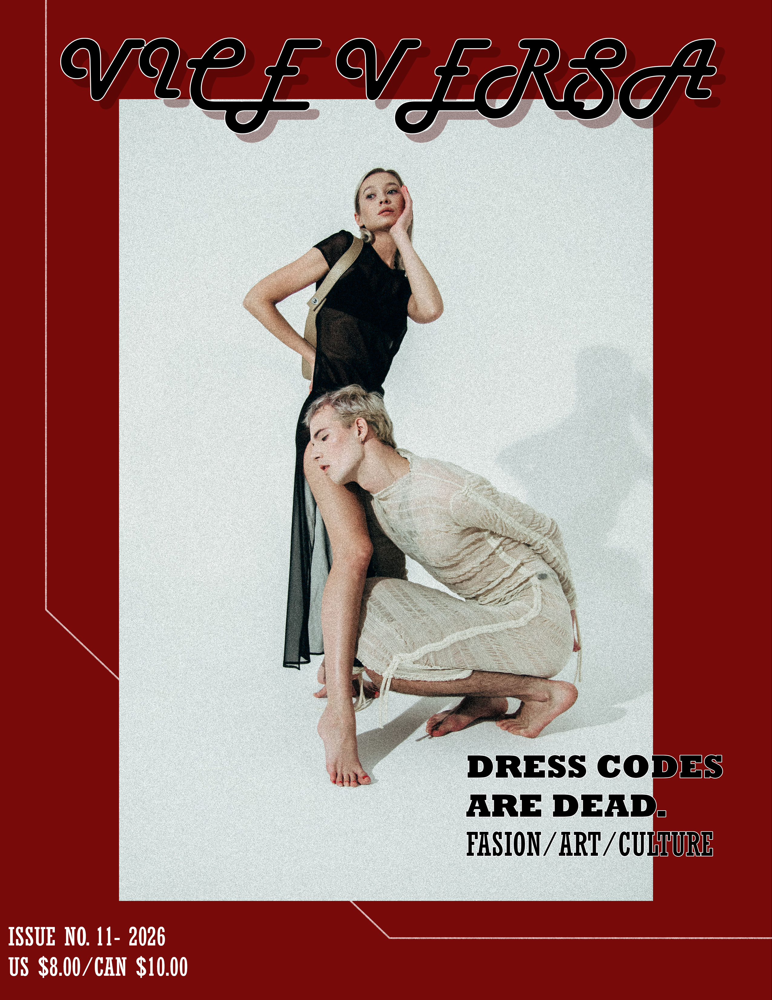

This is one of my Photoshop projects. This is a magazine cover that I created using multiple tools and layers in Photoshop.
The purpose of the project is to show off my photoshop skills in the artform of a digital magazine cover.
The tools I used to create this magazine cover were a photograph, Adjustments, Text Tool, Drop Shadow, Stroke, Layers, and Paint Brush.
